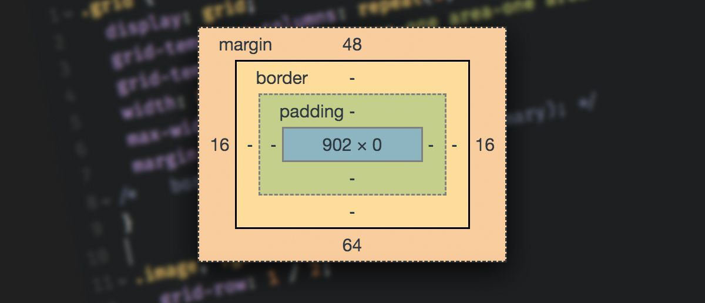
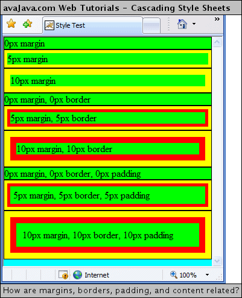

What is the difference between Margin, Border, and Padding?
To begin with, these elements of margin, border and padding refer to the text you can make in a CSS document in order to help design your web page. Think of CSS as your styler for your website. These elements we are going to go over are part of the main blocks of that stylers toolset.
Now just what are these things we need to talk about.
A way to think of these elements would be stages starting from your content to outside the content.
- Padding - Your first stage. The inside element before the border. This affects where the content moves around the inner border. This allows you to move the html content out of being in the top left of their container, which is very visible if you have a coloured background. The reason for this is to make your html content more visually appealing to read.
- Border - Your second stage. The break between margin and padding, this can be expanded which usually is made to make a border around the padding. By default the border is in a box format and is visually not there. Additionally it can be changed in color, thickness and type of border (i.e. solid or dotted).
- Margin - Your final stage. This is the area outside the border, the last area of the three. This allows an element to be moved around the webpage without affecting the inside elements. It also helps you make space between the different content you want to have on your website for example if you want to break up different paragraphs or show the background image you have made for your website.
Below is a visual example of how these elements interact.
In Practice
So how does this look in practice, below is an example of how each of the elements work on a webpage.
As you can see in the practice example, between the margin border and padding they all have their unique tasks to space out the content to be read in a pleasing manner.
Hopefully this quick rundown of these elements gives you a starting idea as to what the differences are between margins, borders and padding are.